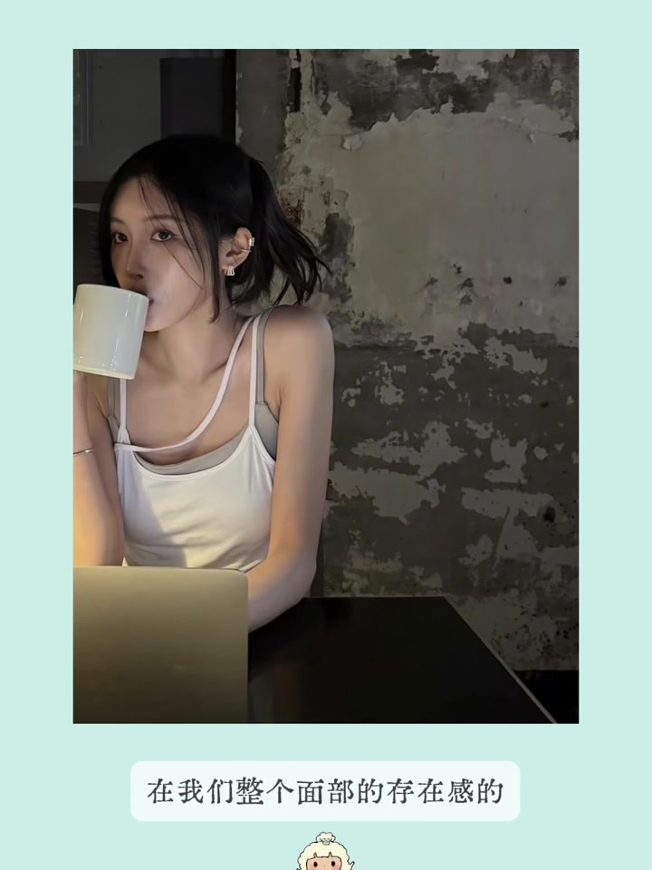
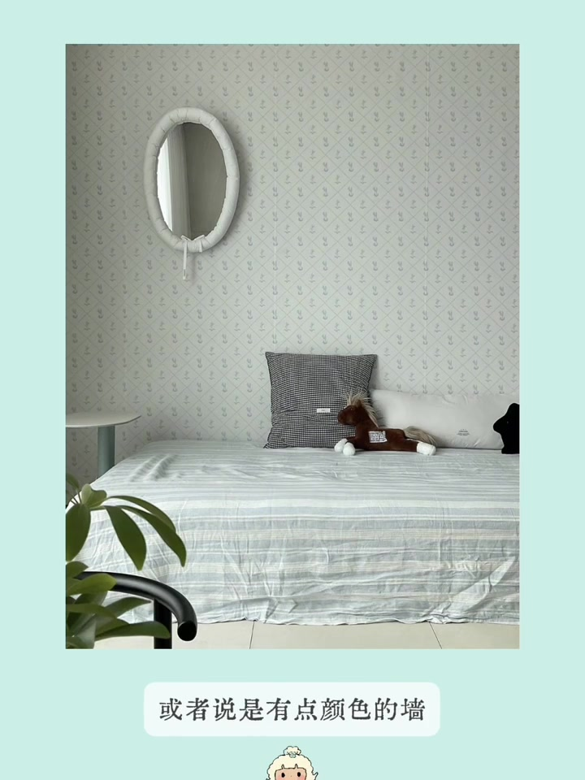
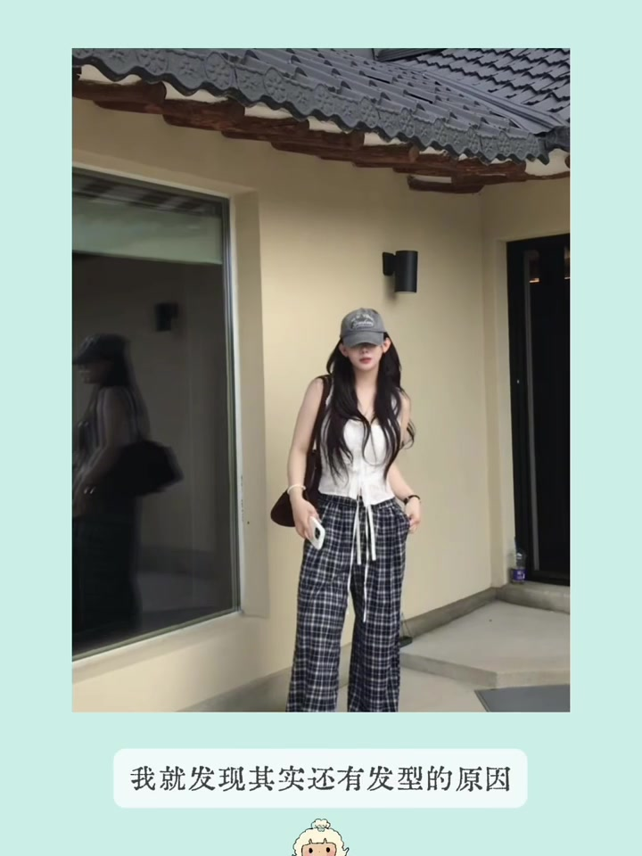
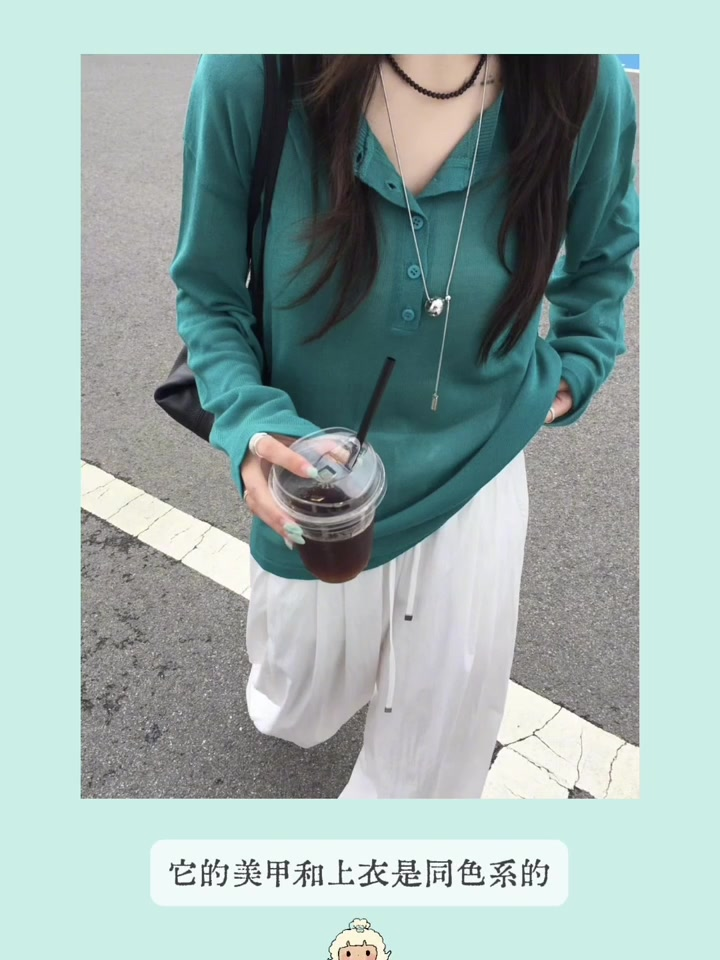
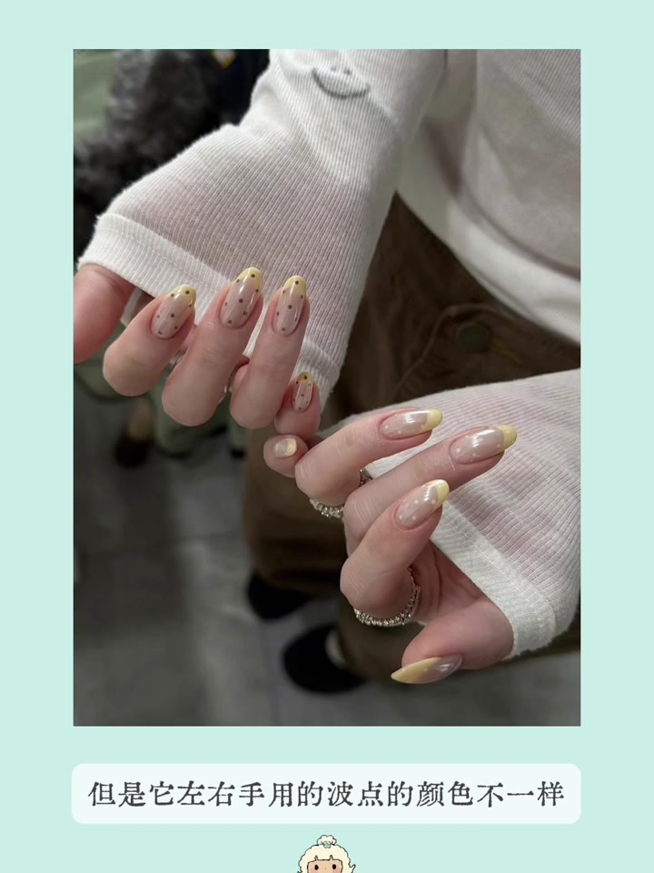
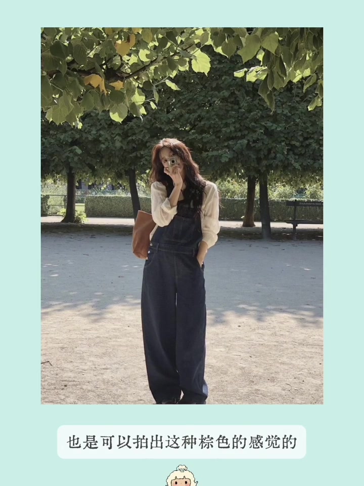
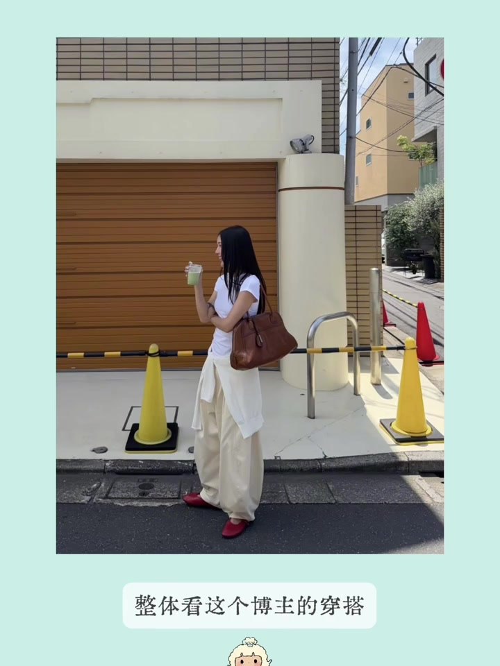

内容要点
视频是博主交「审美作业」并附带自己的分析：每张图不只说好看，而是拆成可迁移的细节——耳饰怎么戴更显耳朵、镜子为什么需要纹理墙、鼻小柱阴影线、鸭舌帽配什么发型显脸小，以及全身颜色如何层层呼应。
知识结构
耳廓夹提高耳朵存在感；布边镜子需搭配有纹理或色彩的墙面。
鼻小柱加阴影线可试鼻唇沟风格；鸭舌帽配耳后括弧发型能显脸小。
美甲、上衣、包、项链、咖啡与头发同色呼应；叠戴项链补整体感。
发丝光可呼应棕色包；冷白色单品单独拎出来再全身搭配。
这张作业的核心不是抄造型，而是学会「局部观察」：一个配饰的位置、一道阴影线、一种发型结构或一组颜色呼应，都能单独写进自己的审美笔记。
耳饰位置：耳廓夹拉高耳朵存在感
第一张启发在耳饰位置。若希望正面能看到两边耳朵，可搜耳廓夹、耳骨夹这类款式，戴在偏高的耳廓上——既能提高耳朵存在感，也有视觉上拉高耳朵的作用。博主说自己之后也会尝试，不再只买戴在耳垂上的耳饰。

镜子软装：纹理墙比大白墙更重要
第二张是购物软件里常见的布边装饰镜，单看很可爱，但若真要挂墙装饰，墙面需要有墙纸、纹理或带颜色，不能只是大白墙。博主说自己家是大白墙，刷到这张图就「拔草」了——白棉质镜子搭大白墙并不会好看。

鼻小柱阴影线：肉鼻可试的修容点
第三张是妆容启发。若鼻子稍微有肉感，修容时可在鼻小柱位置加一条树上的阴影线——很多好看鼻子的特征之一。可以试着画一下这种带鼻唇沟阴影线的鼻子，看是否适合自己。

鸭舌帽发型：耳后括弧让脸被「包裹」
第四张关于戴帽发型。有时戴鸭舌帽会觉得脸不够显小，原因不只在帽型，也在发型：要让脸显小，正面视觉里脸需要被帽子和头发包裹。可参考博主做法，用卡子或电发把耳后位置头发打开——这叫耳后括弧，最适合下颌角不明显、下巴偏圆的脸型。

全身配色：每个色块都在互相点名
第五张有两层启发。一是颜色搭配：从视觉上看，美甲和上衣同色系，黑包与短款黑项链同色，手上咖啡和头发同色，裤子和长款银项链在视觉上也同色——整体穿搭因此很有层次，各颜色呼应也很到位。

叠戴项链与左右手不同色波点甲
二是项链叠戴：叠戴可选性更高，可用两条项链分别呼应身上不同颜色或元素；有时全身穿搭缺整体感，加两条叠戴项链就会好很多。第六张是波点美甲：左右手波点颜色不同（一黑一米白），也可做无饰的裸色甲再换不同颜色波点，黄蓝、绿红、红黑等搭配都好看。

发丝光与冷白色：补呼应、破同色焦虑
第七张关于发丝光：背棕色系包但身上没有同色系配饰时，可找阳光拍出头发的发丝光，棕色光块就能和包形成呼应。最后一张解决冷白与暖白难搭的问题——把冷白色单独拎出来，看成另一种颜色再做全身搭配；博主那件冷白 T 恤换成红、灰、黄也会好看，日常很实用。
